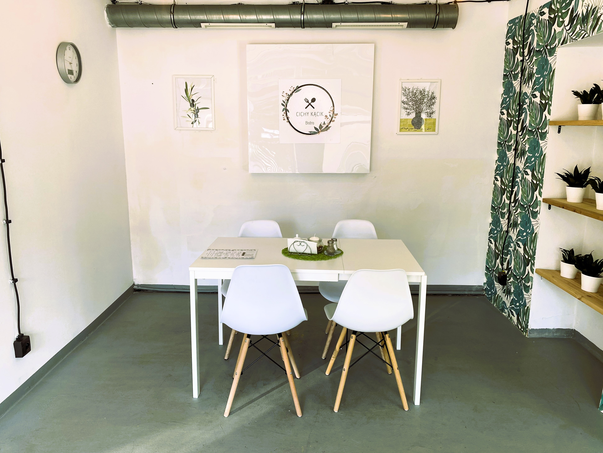
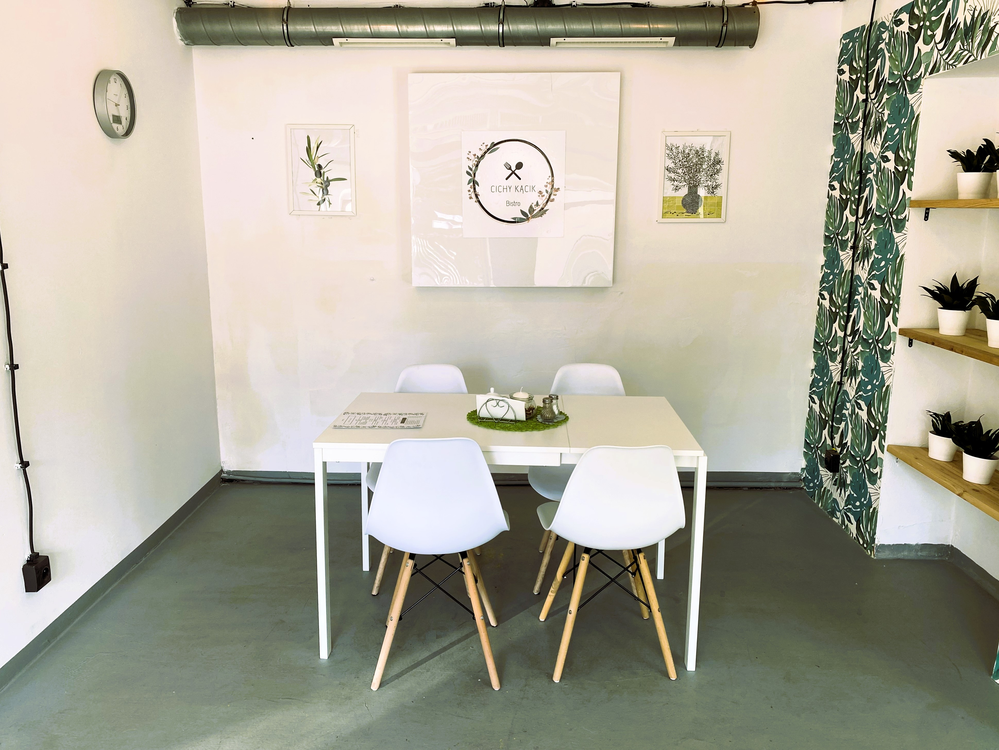

Bistro Cichy Kącik
O nas
Bistro które zaprasza do zanurzenia się w niepowtarzalnym klimacie kuchni polskiej. Nasze bistro to miejsce, gdzie każdy kto nas odwiedzi, będzie mógł poczuć się jak w domu. Wszystkie nasze potrawy przygotowujemy z najwyższą starannością, korzystając wyłącznie z najlepszych, świeżych składników. Zapraszamy do odwiedzenia naszego bistro i skosztowania naszych smakołyków. Jesteśmy przekonani, że Cichy Kącik stanie się ulubionym miejscem niejednego miłośnika kuchni polskiej. Polska kuchnia jest pełna wyjątkowych smaków i aromatów, a pierogi, krokiety i uszka z barszczem są prawdziwymi perełkami tego kulinarnego dziedzictwa.
Menu
Pierogi to prawdziwa polska klasyka, której nie sposób się oprzeć. Delikatne ciasto wypełnione różnorodnymi nadzieniami, takimi jak mięso, kapusta z grzybami czy ser, rozpływa się w ustach, oferując niezapomnianą przyjemność smakową. Krokiety to kolejna kulinarna uczta, której trudno się oprzeć. Delikatne placuszki nadziewane mięsem, grzybami czy kapustą, a następnie delikatnie panierowane i smażone na złocisty kolor. Ich chrupiąca skórka i soczyste wnętrze to połączenie, które rozbudza zmysły i sprawia, że stają się one niezapomnianym doznaniem smakowym. Uszka z barszczem to tradycyjne danie, które nieodłącznie kojarzy się z polskimi wigilijnymi tradycjami. Te małe pierożki wypełnione grzybami zanurzone w aromatycznym czerwonym barszczu to prawdziwa uczta dla podniebienia. Intensywny smak barszczu w połączeniu z delikatnym nadzieniem to kompozycja, której nie można się oprzeć. Polska kuchnia oferuje nie tylko wyjątkowe smaki, ale również moc tradycji i historii, które są przekazywane z pokolenia na pokolenie. Pierogi, krokiety i uszka z barszczem są jednym z najlepszych przykładów tych kulinarnych skarbów, które sprawiają, że polska kuchnia jest doceniana na całym świecie.
Kontakt
text